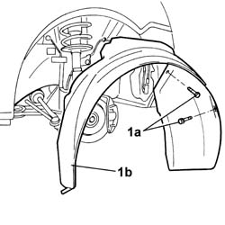

7055B91 Right front WHEEL ARCH LINER - R.R.
- Path
- Procedures > 70 FITTINGS > 7055 MOULDINGS ON PROTECTIONS > 7055B EXTERIOR PROTECTIONS > 7055B91 Right front WHEEL ARCH LINER - R.R.
- Kind
- repair procedure (removal / refitting; the operation number is the code)
- Applies to
- all engines; all production periods
- Interactive page
- https://sloeber94.github.io/elrnDB-fPnd/en/#/2753310
Applies to: all engines; all production periods
 Removing
Removing
 Refitting
Refitting1. Undo the fixing bolts (1a) and remove the wheel arch (1b).

Applies to: all engines; all production periods
Refitting
RemovingFit the wheel arch liner in place and tighten the fixing bolts.
Topics linked from this page (1)
Topics that link to this page (15)
- 1092B42 Air conditioning compressor and alternator drive belt TENSIONER - R.R.
- 5040A40 air conditioner condenser - r+r
- 5040A44 air conditioner dehydrating filter/accumulator - r+r
- 5040A50 pipe from compressor to air conditioner condenser - r+r
- 5040A58 pipe from expansion valve to compressor - r+r
- 5040A60 pipe from condenser to evaporator (expansion pipe) - r+r
- 5040B20 AIR CONDITIONING SYSTEM' PRESSURE LINEAR TRANSDUCER - R.R.
- 5050A10 windscreen washer fluid reservoir (in engine bay) - r+r
- 5050B22 front and rear screen washer pump - r+r
- 5505A90 rear wiring bundle - r r or replace
- 5505C26 bonnet wiring - r r
- 5540B14 front headlamp unit (one) lh or rh - r r
- 7055B90 Left front WHEEL ARCH LINER - R.R.
- 7210A02 FRONT END ASSEMBLY RR
- 7210A18 FRONT CROSSMEMBER